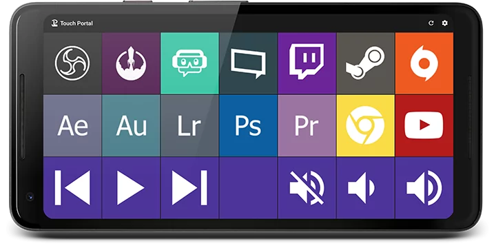
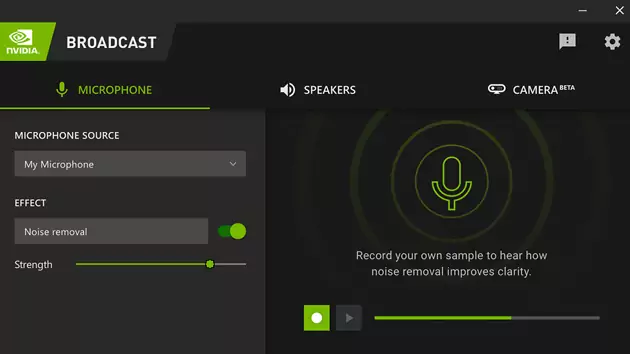
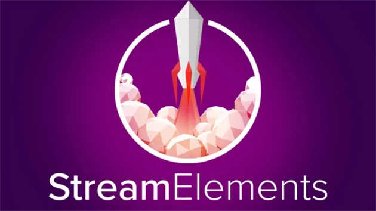
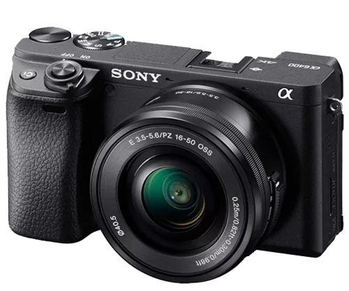
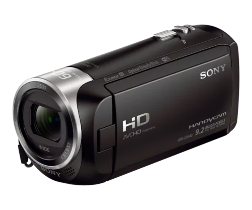

How to Stream Pinball
Want to stream some Pinballs?
Streaming virtural pinball is similar in alot of ways to streaming real pinball. Its alot of fun, but also takes some effort.
On this page we have collected numerous resources, made by the community, to help get you started on your first Pinball stream! Also feel free to reach out in the Discord with any questions you may have.
Please like, follow, subscribe and thank all of the amazing community members who help others learn.
There are to many to list, here are a few key people that have inspired so many of us!
How to Stream Pinball
Community Guides
How to fix webcam quality
Pinball Streaming Tips
Intro to Pinball Streaming
SSS Ep 1 & How to Build a Rig
Stream pinball with Fliptronic!
Fliptronic Guide
Written Guides
Dead Flip Pinball Written Guide
A comprehensive written guide on setting up your pinball stream by the Godfather of Pinball Streaming, Jack Danger.
Read Guide ↗Buffalo Pinball Written Guide
Learn the technical basics of how to live stream real pinball on Twitch with this detailed guide from Buffalo Pinball.
Read Guide ↗How to Stream Pinball
Software
OBS Studio
Open Broadcaster Software is one of the best broadcasting available. It offers tons of options, customization and its easy to learn!
Here are some of the key settings for livestreaming to Twitch.
-
►
Bitrate: Run a speedtest to determine your upload speed, don't exceed 6000kpps (Max for Twitch non partners)
-
►
Encoder: Follow Twitch Encoding Guideliness and for Nvidia user follow this NVIDIA Nvenc OBS Guide
-
►
FPS: Use 60 fps to achieve the smoothest VPinball streams
-
►
Output Resolution: Its best to not exceed 1080p, even if your main display is 2k / 4k, set resolution to 1080p
We have listed some helpful OBS tutorial videos and links below. If there is something specific your looking to do, there is likely a tutorial on it.
Touch Portal
Don't have $$$ for a fancy elgato stream deck? Touch Portal has you covered! Turn any old mobile device, tablet or phone, into a stream deck. Remote control OBS and many other stream fuctions.

Nvidia Broadcast
Do you have an RTX 2060 or newer video card? If so, Nvidia Broadcast is available to you. It's a great tool to improve the production quality of your livestreams. Tune out unwanted back ground noise, remove webcam background, and more!

Stream Elements
Are you looking to add Twitch alerts like 'Follow', 'Subscriber', 'Host', etc.? StreamElements is a web-based overlay system that acts as a browser source in OBS!

How to Stream Pinball
Hardware
Playfield Capture
No one wants to watch a stream with a blurry, response delayed Playfield capture, which is why capturing the playfiend is one the most important parts of a pinball stream! Huge thanks to pioneer pinball streamers like Deadflip, who've done most of the research and testing of what looks and works the best, leaving the majoity of us to just follow in their foot steps! Please thank those community members for their hard work.
Whether your streaming physical pinball or virtual, the most ideal method to capture the playfiend is with a high quality camera. However with virtual pinball you can also use a video capture card. In all cases its best to always use devices that can capture and display @ 60fps.
Here are some of the most popular solutions used by the community.

Sony a6400
This may be a bit overkill but your playfield is going to look amazing on stream!
View on Amazon ↗SONY ZV-1
This is Deadflips camera of choice... do we need to say anything else?!
View on Amazon ↗
SONY cx405
With great picture quality and price point its no wonder the CX is used by so many.
View on Amazon ↗1080p 60fps is all we need, also check out this cheaper option that does the same job!
Camera Comparison
with MPT3k & Don'tPanicFlip